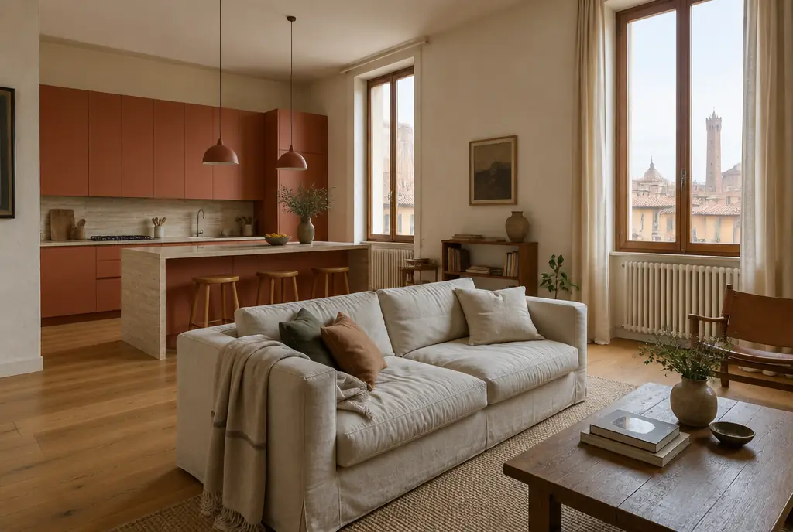
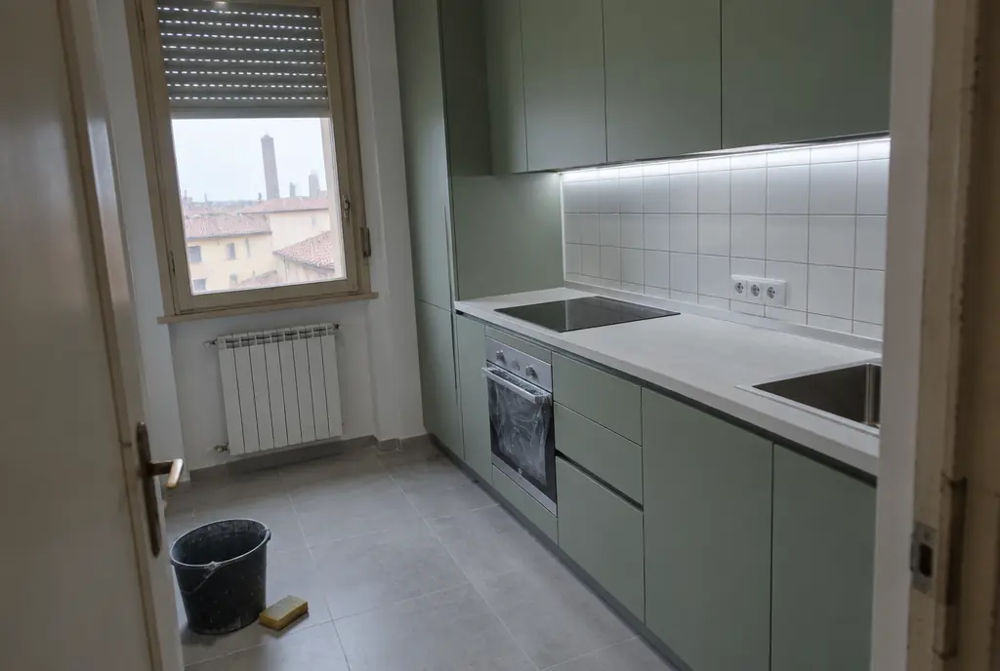
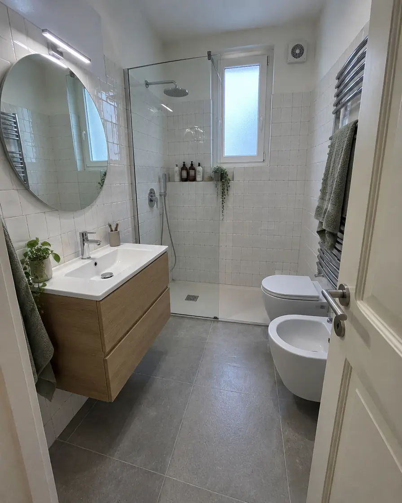
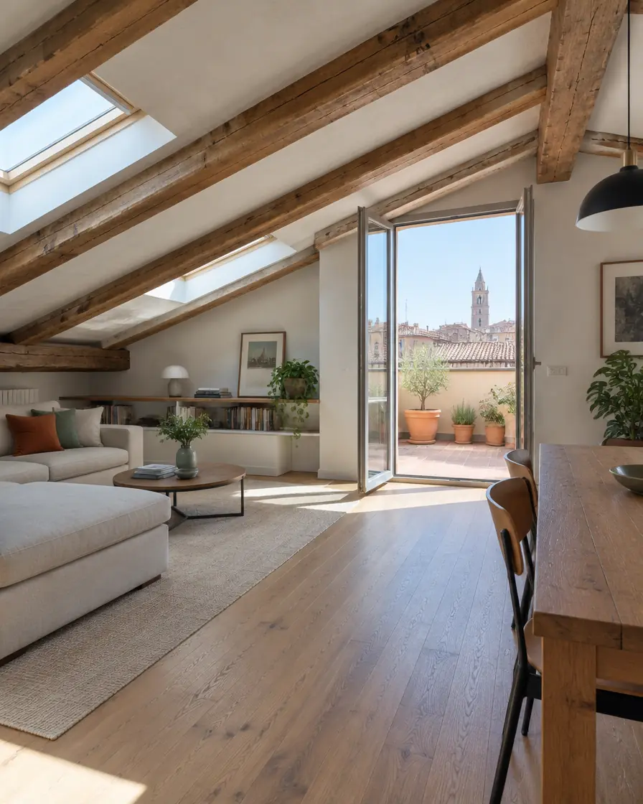
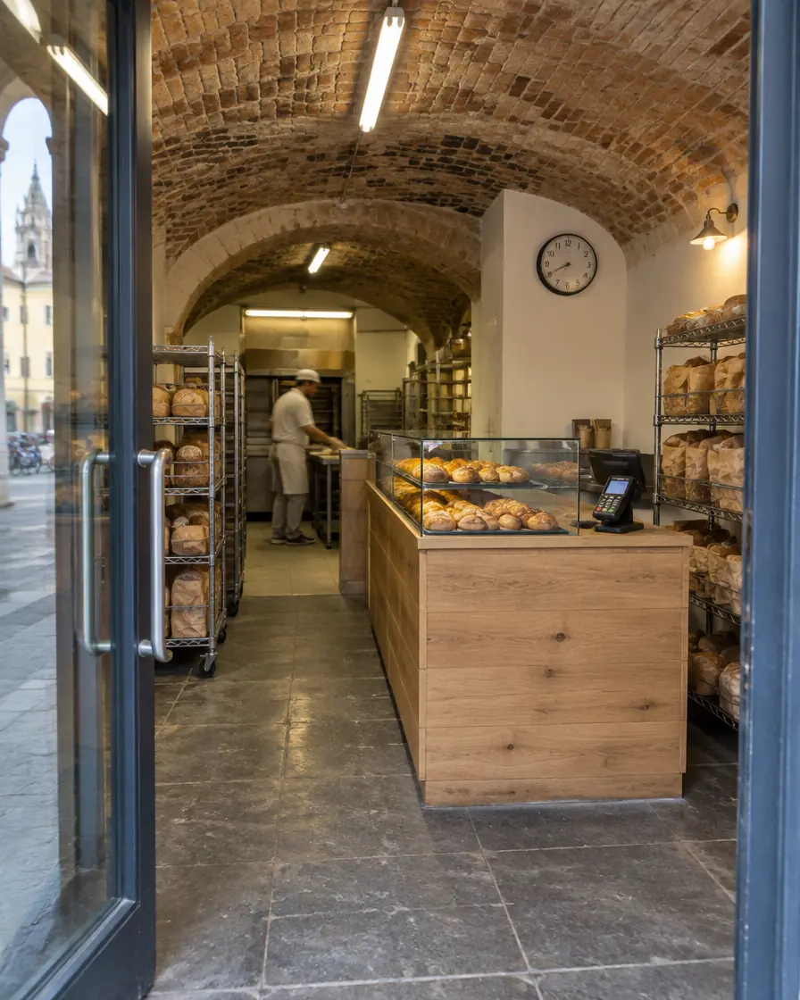
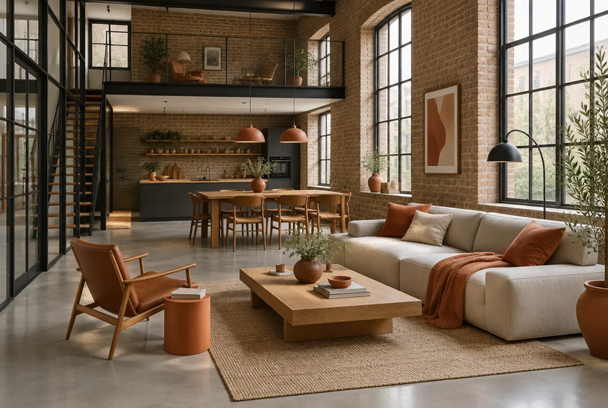
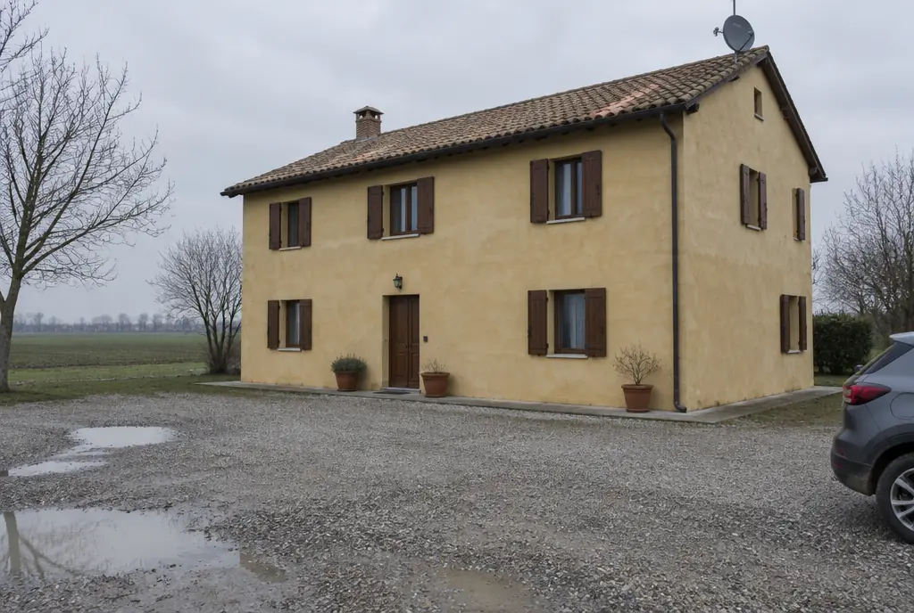
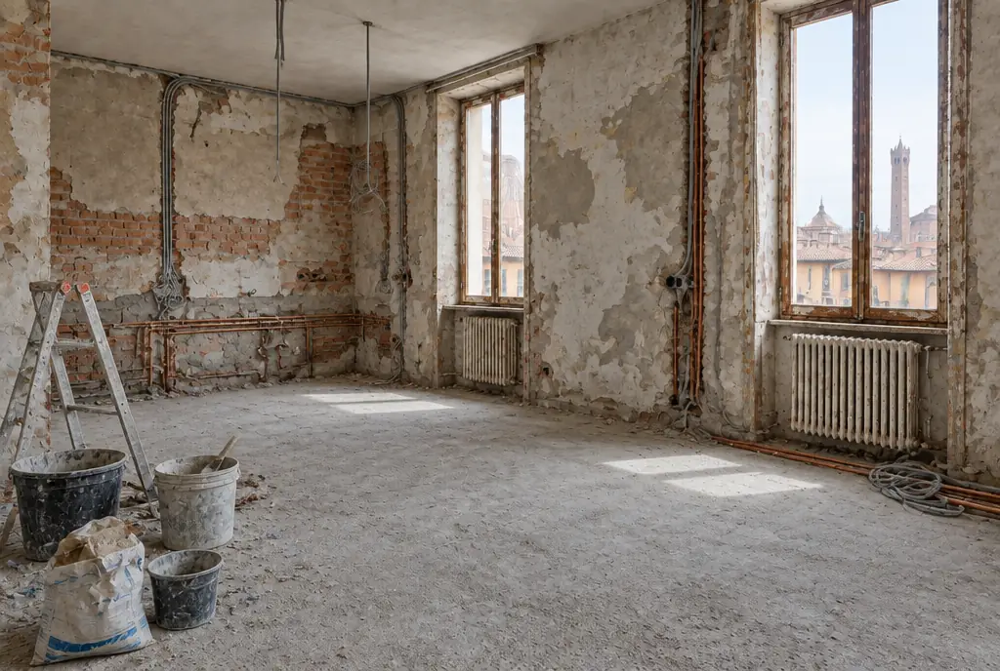
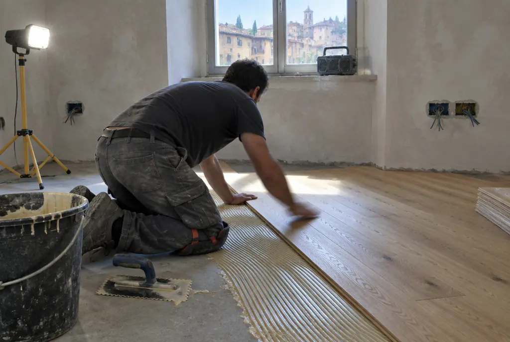

AppartamentoCasa N.07
Bologna, zona Mazzini · scheda completa qui sotto
- Superficie
- 128 m²
- Cantiere
- 5 mesi
- Budget
- da 95.000 €
Progetti · 2019–2026
Per ogni lavoro: superficie, durata del cantiere e budget di partenza. Progetti fittizi, pensati per mostrare interventi diversi sull'esistente.

AppartamentoBologna, zona Mazzini · scheda completa qui sotto

CucinaBologna, centro storico

BagnoBologna, via Santo Stefano

MansardaModena, centro

LocaleParma, sotto i portici

RecuperoParma, Oltretorrente

Casa a cortePianura modenese
Nessun progetto in questa categoria.
Scheda progetto · Casa N.07
Due tramezzi tolti, cucina aperta sul soggiorno, impianti elettrico e idraulico rifatti da zero, serramenti nuovi a taglio termico.

PrimaDopoRimozione tramezzi, pavimenti e vecchi impianti. Smaltimento certificato.
Elettrico nuovo, riscaldamento a pavimento, predisposizione domotica.
Massetto alleggerito, intonaci e rasature, posa dei serramenti nuovi.
Posa del rovere, cucina, sanitari, tinteggiatura e porte.
Collaudo, certificazioni, pulizia e consegna.
Ripartizione di esempio per un progetto fittizio.
